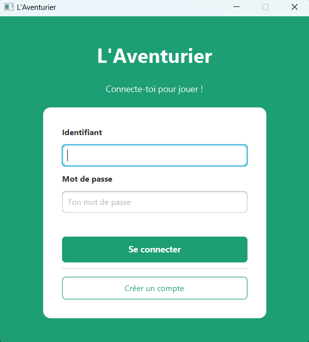
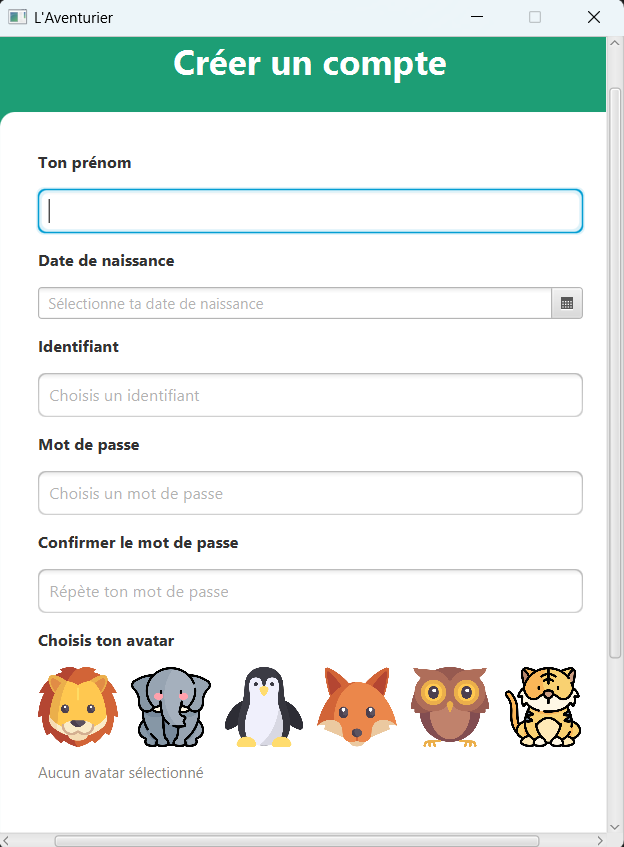
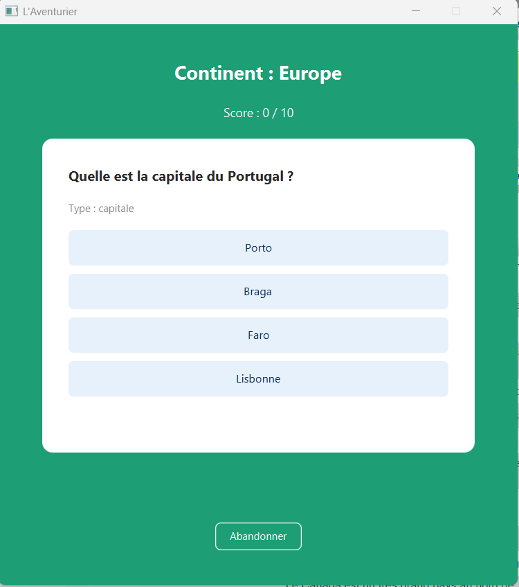
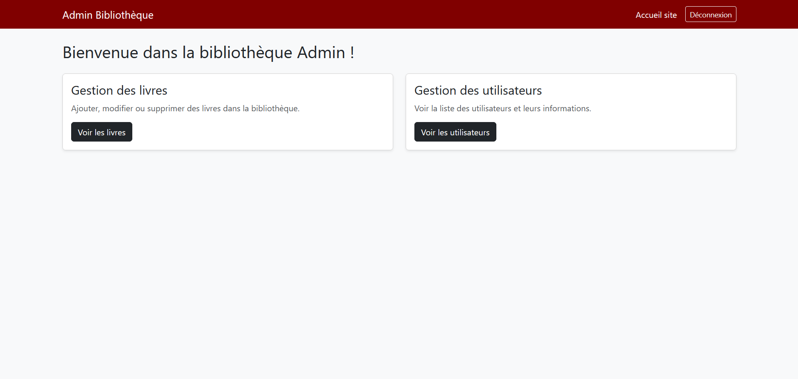
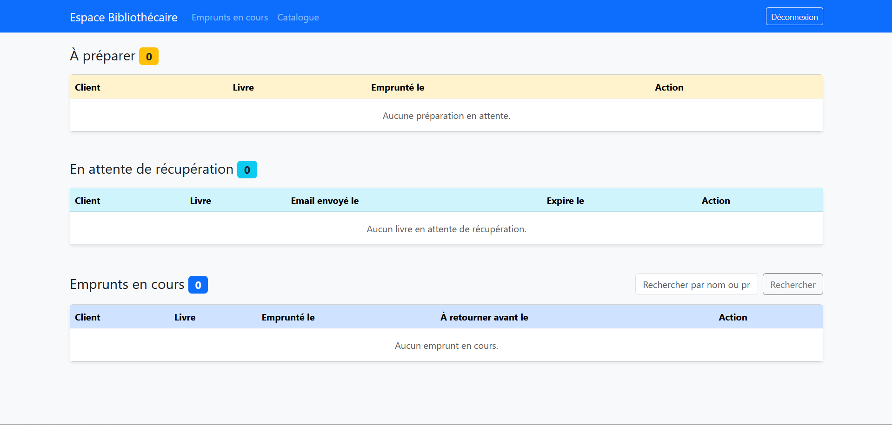
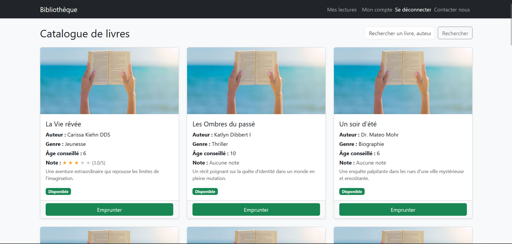
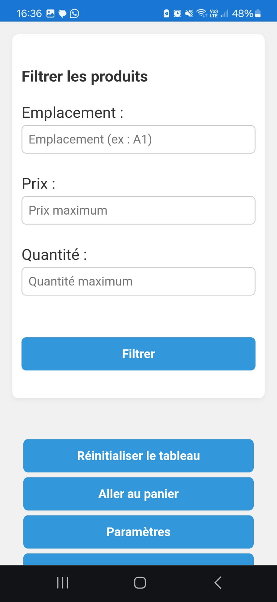
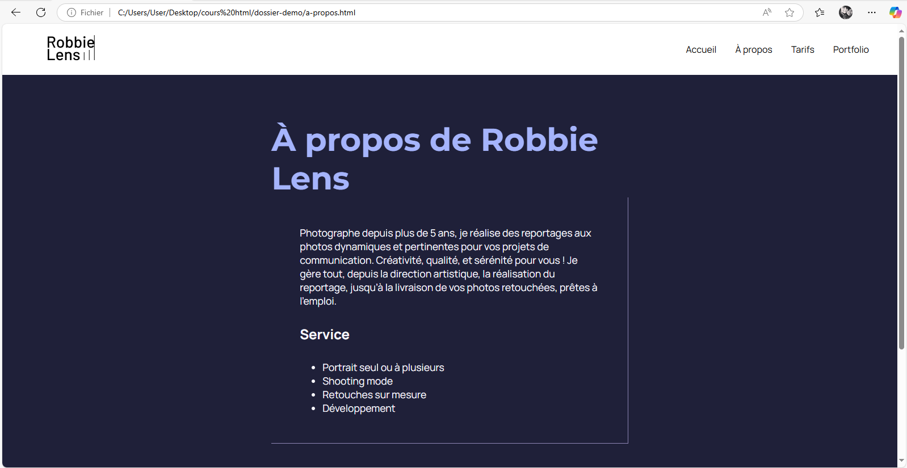
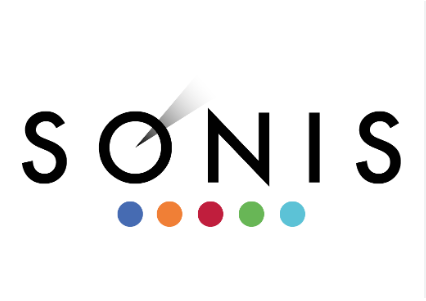
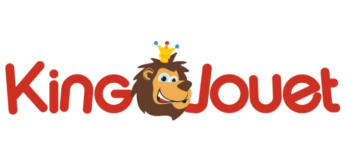

À propos
Je m'appelle Soraya Othman et je suis actuellement étudiante en BTS SIO, spécialité SLAM (Solutions Logicielles et Applications Métiers). Après avoir obtenu un bac professionnel ASSP (Accompagnement, Soins et Services à la Personne), j'ai poursuivi des études de cinéma, puis travaillé comme vendeuse dans un magasin de jouets.
J’ai toujours été curieuse et attirée par le domaine de l’informatique. Cette curiosité m’a poussée à reprendre mes études afin d’en apprendre davantage et de me former sérieusement au développement web et logiciel. Aujourd’hui, je construis mon avenir dans un secteur qui me passionne réellement.
Projets
L'Aventurier



Technologies : Java, JavaFX, MySQL, JDBC, Maven, jBCrypt, Jakarta Mail
Application éducative de quiz géographique dans laquelle les joueurs progressent de continent en continent en répondant à des questions sur les capitales, les animaux emblématiques, les drapeaux et la géographie générale.
- Inscription avec choix d'avatar et connexion sécurisée (mot de passe hashé avec jBCrypt).
- Fiches de révision par pays avant chaque quiz.
- Quiz à choix multiples : 4 types de questions (capitale, animal, drapeau, carte).
- 5 niveaux débloquables progressivement : Europe, Afrique, Amériques, Asie & Océanie, Europe approfondie.
- Suivi de progression avec barre d'avancement par continent.
- Interface administrateur avec double authentification par email (code 6 chiffres) et gestion CRUD complète (joueurs, niveaux, questions, pays).
Le projet est structuré selon le pattern MVC avec couche DAO pour l'accès à la base de données MySQL.
Bibliothèque en ligne



Technologies : PHP, Laravel, MySQL, HTML, CSS, JavaScript
Application web de bibliothèque en ligne permettant aux utilisateurs de louer et gérer des livres. Le projet inclut :
- Gestion des utilisateurs et authentification.
- Consultation du catalogue de livres avec recherche et filtres.
- Réservation et suivi des emprunts de livres.
- Interface admin pour ajouter, modifier et supprimer des livres et utilisateur.
Le projet est développé avec le framework Laravel pour la gestion des routes, des contrôleurs, des vues Blade et des migrations de base de données MySQL.
Billetterie

Technologies : Java, FXML, JavaFX, Wamp
Ce projet est une application de billetterie en cours de développement, conçue pour permettre aux utilisateurs de consulter et gérer des spectacles. La version actuelle inclut un accueil interactif où l'utilisateur peut se connecter à son compte client ou s'inscrire s'il est nouveau. Depuis l'accueil, il est possible de rechercher un spectacle spécifique grâce à une barre de recherche dynamique, et d'afficher les détails complets de chaque spectacle sélectionné.
L'application offre également un espace personnel appelé "Mon espace", où l'utilisateur peut consulter, modifier ou supprimer les informations de son compte. Le projet est structuré selon le modèle MVC, avec des vues en FXML, des contrôleurs JavaFX pour gérer les interactions, et des modèles Java pour accéder et manipuler les données stockées dans la base MySQL via Wamp.
Cette billetterie constitue la version 1 du projet, et elle pose les bases pour intégrer des fonctionnalités supplémentaires comme l'achat de billets, la gestion avancée des spectacles et une interface plus riche et interactive.
Voir sur GitHubApplication Sonistock



Technologies : HTML, CSS, JavaScript, Node.js, XAMPP, phpMyAdmin
Application web développée durant mon stage chez Sonis pour gérer le stock de matériel informatique :
- Base de données gérée localement avec phpMyAdmin (via XAMPP).
- Connexion/déconnexion
- Recherche/filtre
- Tableau des produits avec le prix, les quantitées, l'emplacement et une case pour sélectionner
- Tableau des produits sélectionner dans le panier pour valider le choix
- Interface mobile pour les techniciens : retrait du matériel.
- Interface admin : ajout, modification, suppression de produits,
- Gestion des techniciens (ajout, édition, suppression),
- Modification de l'horaire d’envoi automatique des e-mails de stock faible,
Jeu Tetris

Technologies : HTML, CSS, JavaScript
Un jeu Tetris codé en JavaScript avec gestion des collisions, des lignes et du score. Interface simple et responsive.
Location de voitures en ligne

Technologies : PHP, MySQL, HTML, CSS
Application web e-commerce pour la location de voitures, permettant aux utilisateurs de :
- Créer un compte et se connecter (authentification).
- Consulter le catalogue des voitures disponibles avec filtres et détails.
- Ajouter des voitures dans le panier.
Le projet utilise PHP et MySQL pour la gestion des utilisateurs, du catalogue et du panier.
Site e-commerce "Fiestita"


Technologies : HTML, CSS
Un site vitrine de type e-commerce pour une entreprise spécialisée dans l’organisation de fêtes : anniversaires, mariages, événements professionnels, etc.
Site Photographe - Exercice OpenClassrooms



Technologies : HTML, CSS
Projet réalisé dans le cadre d’un exercice sur la plateforme OpenClassrooms. Il s’agissait de créer le site vitrine d’un photographe professionnel, en respectant une maquette donnée.
Expérience professionnelle
Stage 2 ème année - Sonis
Durée : 7 semaines
Rôle : Développement et amélioration de l'application Sonis Stock
Missions :
- Ajout de nouvelles fonctionnalités dans l'application : calcul automatique du total prix et quantité même après filtrage ou recherche dans le tableau.
- Implémentation de l'exportation d'un tableau Excel des produits affichés, prenant en compte les filtres et recherches appliqués.
- Correction du système de resend pour l'envoi des emails de confirmation pour les différents mouvements de stock.
- Nettoyage et vérification de la base de données clients : correction des mauvaises saisies et suppression des doublons pour rendre la base plus claire et fiable.

Stage - Sonis
Durée : 7 semaines
Rôle : Support technique niveau 1 et développement d'une application de stock.
Missions :
- Développement d'une application de gestion de stock avec interface mobile.
- Réalisation de l'inventaire complet et intégration dans une base de données.
- Interface techniciens pour : recherche des produits, retrait de matériel.
- Interface administrateur pour : ajout, modification, suppression de matériel. Paramétrage des horaires d’envoi automatique d’emails (stock faible). Gestion des comptes techniciens : ajout, modification, suppression.
Vendeuse - King Jouet
Durée : 4 ans
Rôle : Vendeuse dans un magasin de jouets, où j’ai conseillé les clients sur les produits, géré les stocks et contribué à la mise en valeur des articles pour améliorer l'expérience d'achat.

Vendeuse en produits informatiques et gaming - Achatmania
Événements : Paris Games Week, Toulouse Game Show, DreamHack
Rôle : Vendeuse de produits informatiques et gaming lors de salons spécialisés dans le secteur. Conseil, démonstration et vente de produits aux visiteurs, en mettant en avant leurs spécificités et avantages.

Veille technologique
🔎 Mes méthodes de veille
Pour rester informée des évolutions technologiques, j'ai mis en place plusieurs moyens de veille complémentaires que je consulte régulièrement :
📡 Flux RSS — Feedly
J'utilise Feedly comme agrégateur de flux RSS pour centraliser en un seul endroit les publications de plusieurs sources tech. Cela me permet de consulter les nouveautés sans visiter chaque site individuellement.
📧 Newsletters
Je suis abonnée à plusieurs newsletters : Korben pour les outils et actualités développeurs, BDM (Blog du Modérateur) pour les tendances numériques et web, et Oracle pour les nouveautés autour des bases de données et du cloud.
Je consulte régulièrement mon fil d'actualité LinkedIn où je suis des professionnels du développement et des entreprises tech. C'est une source utile pour découvrir des retours d'expérience, des annonces de nouvelles technologies et des articles de fond.
🤖 Thème : L'IA au service de l'automatisation des bases de données
L'intelligence artificielle transforme en profondeur la façon dont les développeurs et les administrateurs interagissent avec les bases de données. En tant qu'étudiante en BTS SIO SLAM, j'utilise MySQL dans la quasi-totalité de mes projets — et lors de mon stage chez Sonis, j'ai effectué manuellement des tâches longues et répétitives (nettoyage de doublons, correction de saisies). C'est ce constat concret qui m'a amenée à m'intéresser à l'automatisation de ces tâches par l'IA.
Des outils comme AI2SQL ou Chat2DB permettent de formuler une question en langage naturel — « Quels produits sont en rupture de stock ? » — et l'IA génère automatiquement la requête SQL correspondante. Cette technologie repose sur des LLMs (grands modèles de langage) qui ont été entraînés à comprendre la structure des bases de données et la syntaxe SQL. Elle réduit la barrière d'entrée pour les non-développeurs tout en accélérant le travail des développeurs eux-mêmes.
Des solutions basées sur l'IA peuvent analyser une base de données et détecter automatiquement les doublons, les valeurs aberrantes, les champs vides ou mal renseignés — exactement le travail que j'ai réalisé manuellement sur la base clients de Sonis. Ces outils proposent ensuite des corrections ou des regroupements, réduisant un travail de plusieurs jours à quelques minutes. Certains systèmes peuvent aussi surveiller en continu la qualité des données et alerter en cas d'anomalie.
L'IA analyse les requêtes SQL existantes, identifie celles qui sont lentes ou coûteuses, et suggère des améliorations concrètes : ajout d'index manquants, réécriture de jointures inefficaces, mise en cache intelligente. Des outils comme EverSQL ou les fonctionnalités intégrées dans Oracle Autonomous Database appliquent ces optimisations de façon automatique, sans intervention du développeur.
⚠️ Limites et points de vigilance
L'IA ne remplace pas la maîtrise du SQL ni la compréhension du modèle de données : une requête générée automatiquement peut être syntaxiquement correcte mais sémantiquement fausse si la base est mal structurée. La sécurité est également un enjeu critique — laisser une IA modifier une base de données en production exige des droits d'accès strictement contrôlés et une supervision humaine. Enfin, ces outils restent dépendants de la qualité de la documentation et du schéma fourni.
📚 Sources
- Blog Google Cloud — Text-to-SQL avec les LLMs (déc. 2025) — via Feedly
- Zencoder — Meilleurs outils IA pour SQL en 2025 — via Feedly
- Korben — Veille tech & outils développeurs — newsletter
- Blog du Modérateur (BDM) — Tendances numériques et IA — newsletter
- Oracle — Oracle Autonomous Database & IA — newsletter + LinkedIn
Contactez moi
LinkedIn : Cliquer ici pour voir mon profil
GitHub : Cliquer ici pour voir mon profil